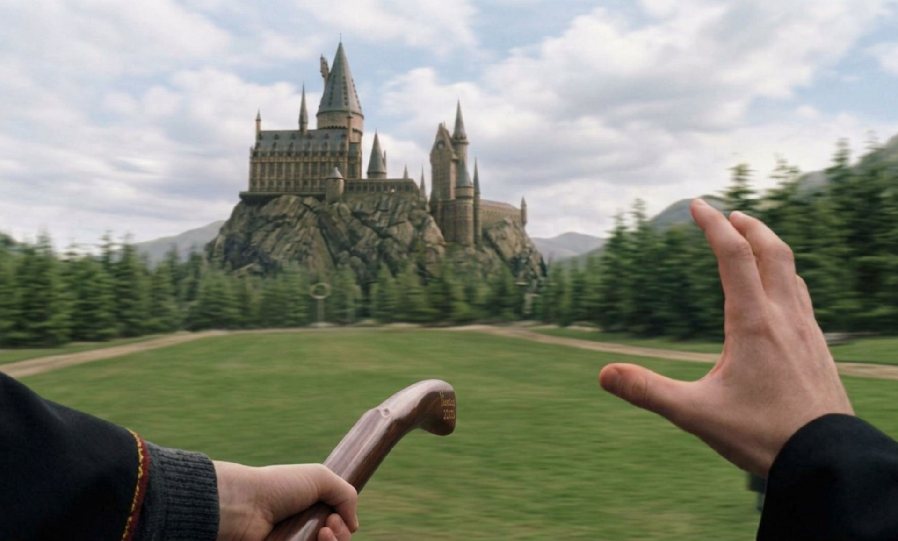
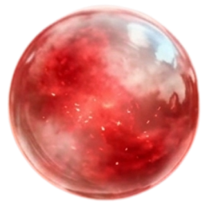

<div class="minigame-container">
  

  <div class="minigame-instructions">
    <p>Afferra la Ricordopoli prima che cada!</p>
    <p class="timer-display">
      Tempo: <strong>{{ catchTimer }}s</strong>
    </p>
  </div>

  <div
    *ngIf="showSphere"
    class="interactive-sphere"
    [style.top.%]="spherePosY"
    [style.left.%]="spherePosX"
    (click)="catchSphereSuccess()"
  >
    
  </div>
</div>
